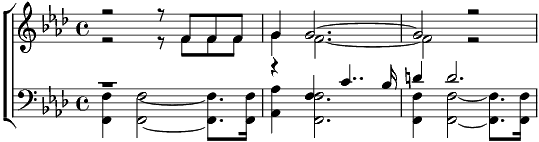

1. L'orage gronde ...
L'orage gronde
Les cieux collèrent...
Les pluies t'inondent...
Les pluies t'inondent
Eclats d'enfer...
Ectats d'enfer
Refrain:
Quand dans ta vie vient la foudre noire
Quand dans ton cri s'est perdu l'espoir, l'espoir
C'est la défête effrayée de voir
Tes yeux, tes yeux d'éclairs dans l'affreux miroir
2. L'avion se cra-ash...
L'avion se cra-ash
la vie s'arra-ach, la vie s'arra-ach,
la vie s'arra-ach L'envie se ca-ach...
l'ennui s'atta-ach
Refrain:
Quand dans ta vie vient la foudre noire
Quand dans ton cri s'est perdu l'espoir
C'est la défête effrayée de voir
Tes yeux, tes yeux d'éclairs dans l'affreux miroir
Coda:
Tonnerre de Brest...
Grêlons d'horreur
Plus rien ne rest'
Sinon l'malheur...